Fjord visual lifecycle & weather
Issue #89 · functional evidence from actual Simulation Core commands. Report and reproduction · 25-Winter checkpoints · Controlled variants
Same camera, four weather classes
Harsh and Severe deliberately use strong mist. The forecast retains the actual Core modifiers; visuals introduce no new simulation rules.
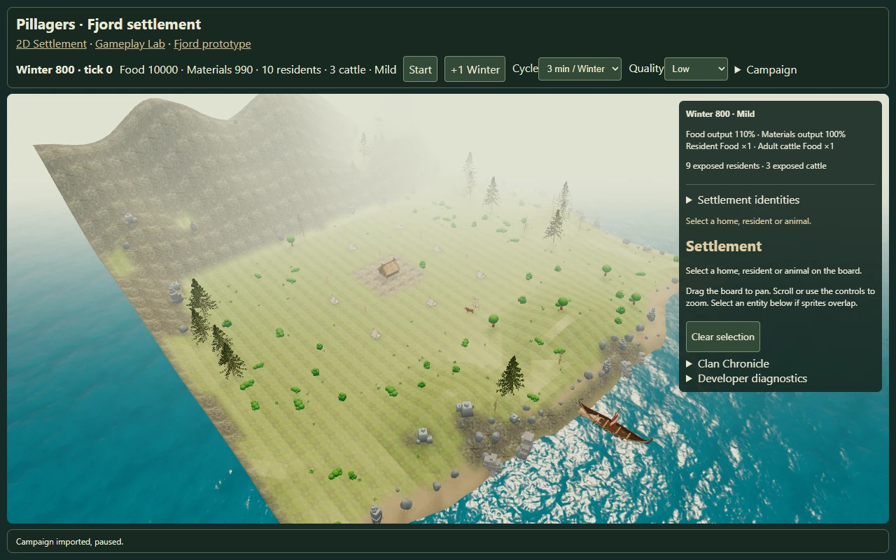
Mild — warmer and clearer.
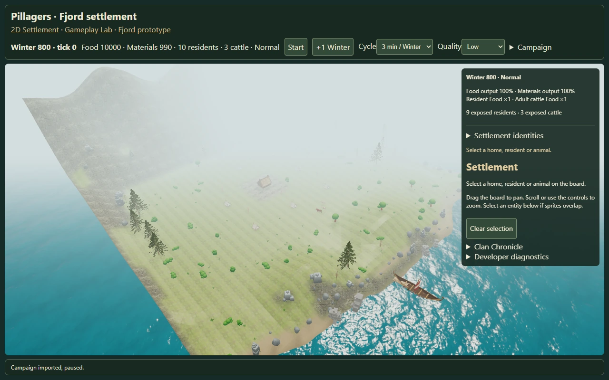
Normal — existing baseline.
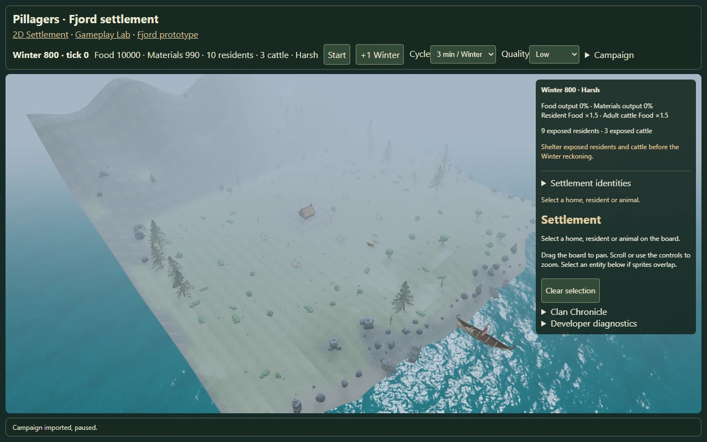
Harsh — cold light, mist and partial winter treatment.
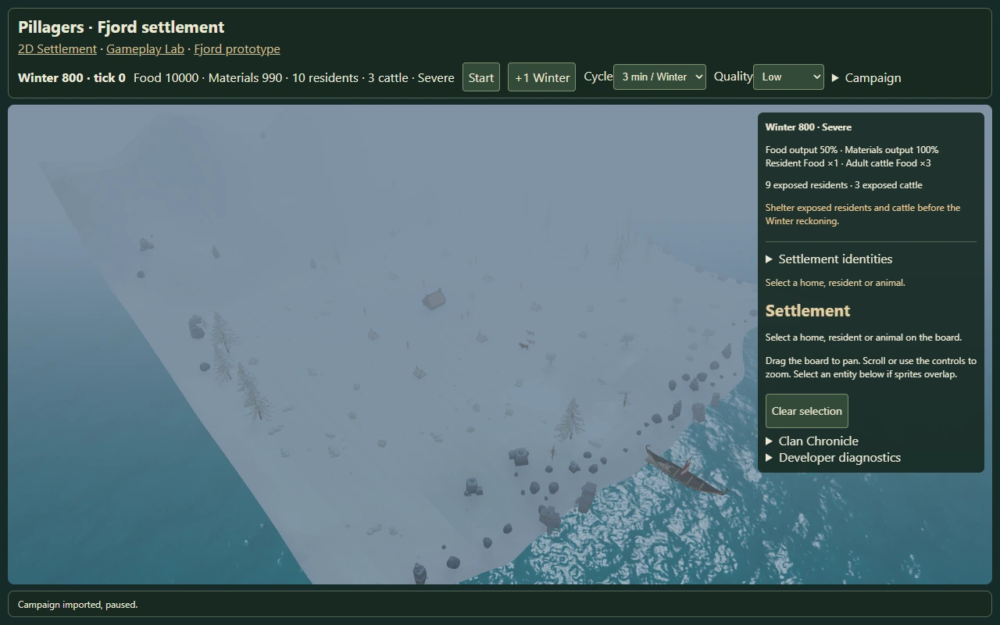
Severe — darker, snow treatment and strong mist.
Production and tablet queue
Live awards show +1; a Winter jump shows the exact +N per producer/resource. Labels rise and fade without names. Eligible female cows have their own real Food awards.
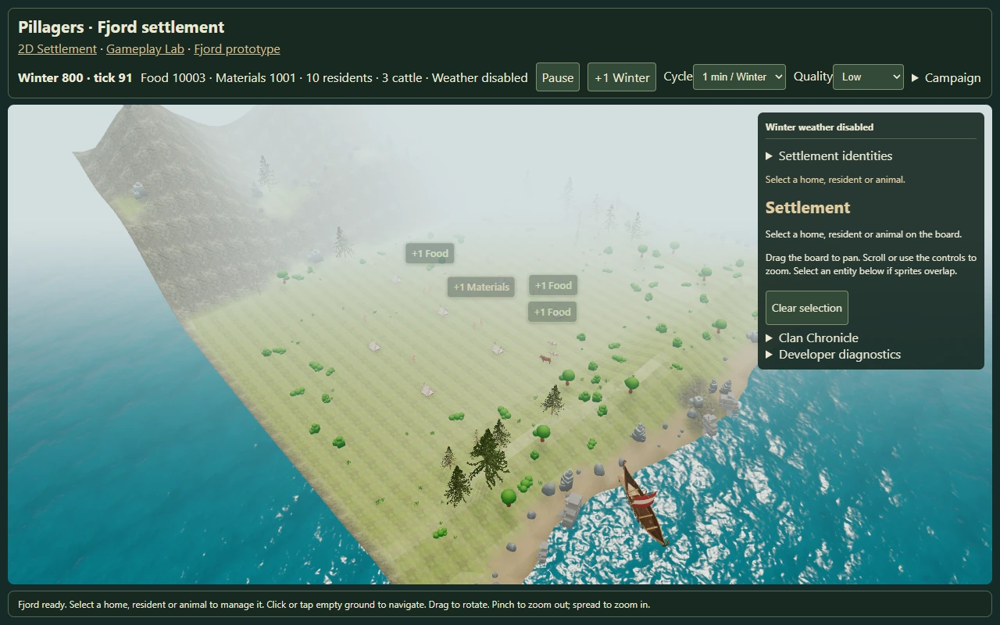
Actual resident Food/Materials and cow Food awards.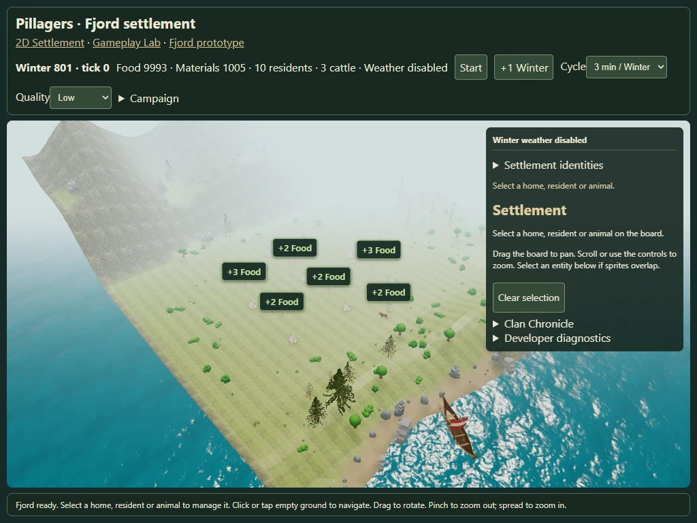
Tablet emulation: six concurrent labels; remaining producers queue.Growth, upgrades and 25 Winters
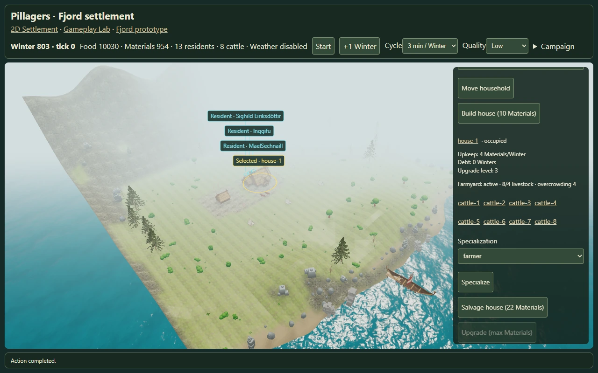
Controlled age stages and actual home upgrades.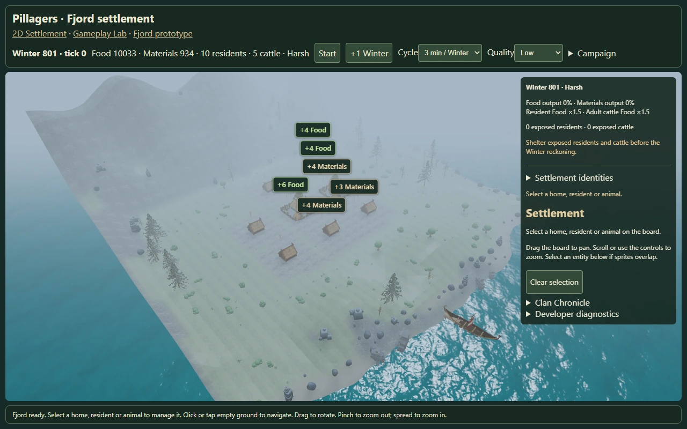
Winter 801.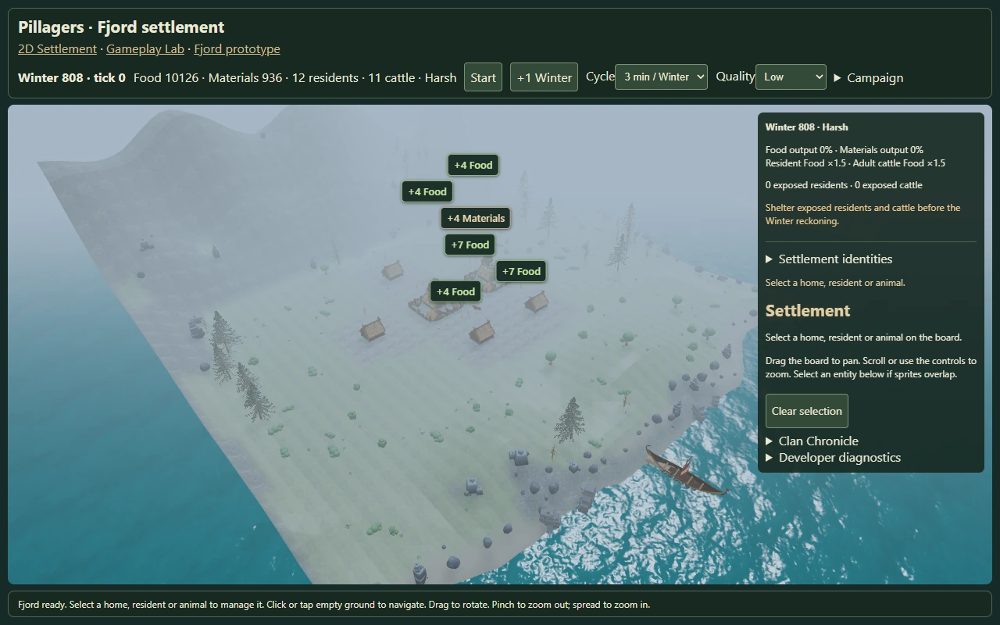
Winter 808.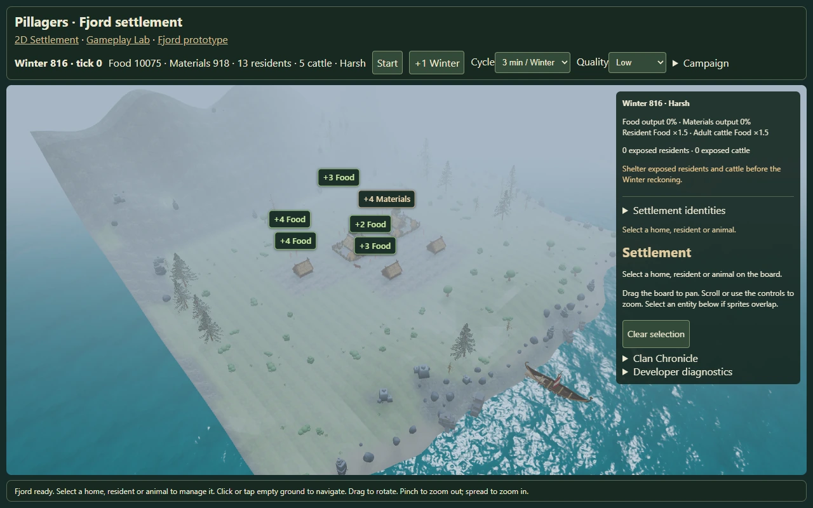
Winter 816.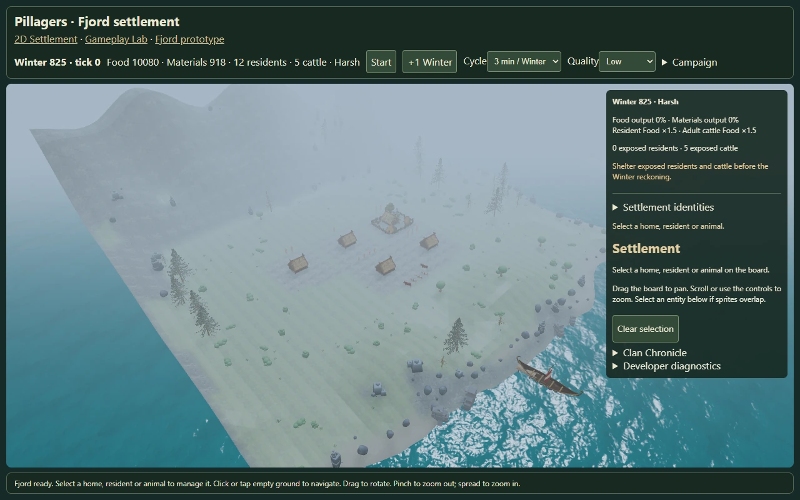
Winter 825: 12 residents, five cattle.Chromium/SwiftShader and touch emulation; physical Safari remains untested. These captures are not performance measurements.